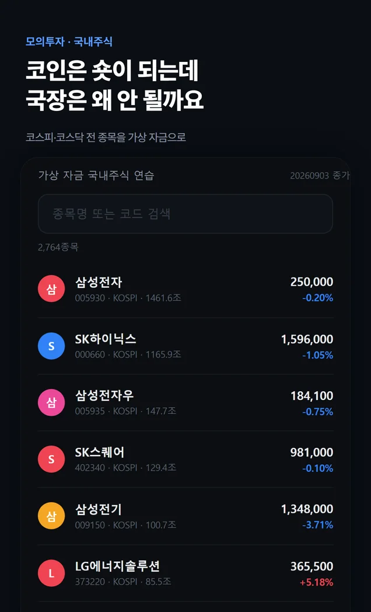
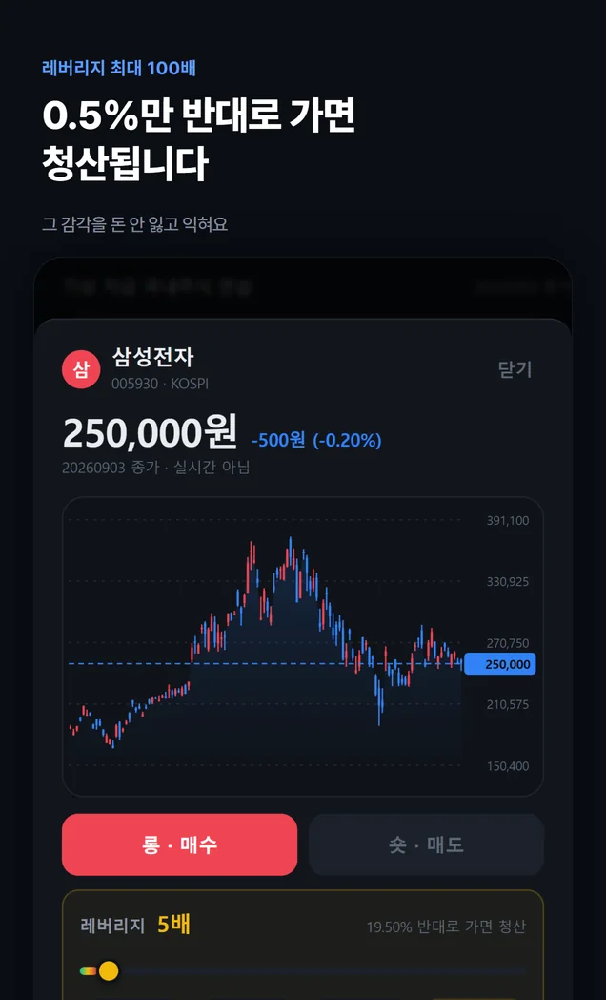
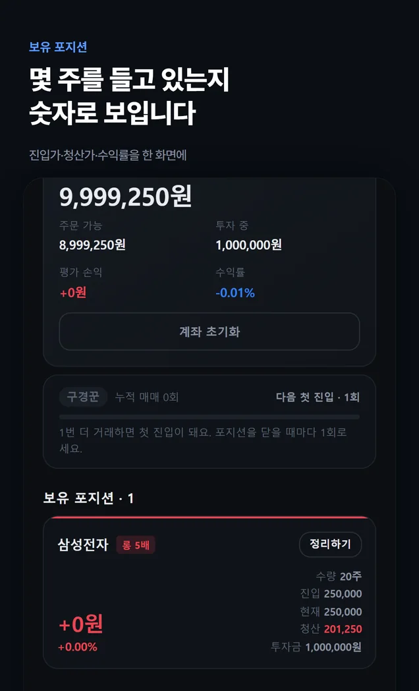

화면 둘러보기
앱 안은 이렇게 생겼습니다



옆으로 넘기세요
특징
오르는 쪽도, 내리는 쪽도
가상 자금으로 연습합니다
종목과 방향, 레버리지를 직접 고릅니다. 선택에 따라 수익과 손실이 어떻게 달라지는지 살펴보세요.
- 전 종목
코스피 · 코스닥
이름으로 검색해서 고릅니다. 상장된 종목은 다 있습니다.
- 숏
내리는 쪽에도
오를 것으로 보는 롱과 내릴 것으로 보는 숏. 두 방향을 모의 거래로 연습합니다.
- 100배
레버리지
배율을 고르면 청산 예상가가 함께 표시됩니다. 배율이 커질수록 손실도 크게 변합니다.
- 종가
하루 한 번 갱신
시세는 금융위원회 공개 데이터의 최근 영업일 종가입니다. 장중 값이 아닙니다.
- 주간
수익률 랭킹
이번 주 수익률로 줄을 섭니다. 닉네임은 자동으로 정해집니다.
- 짧게
게시판
한 줄씩 남깁니다. 신고가 쌓이면 자동으로 가려집니다.
지금 이 순간
랭킹 상위 5
앱이 읽는 것과 같은 표를 같은 자리에서 읽습니다. 숫자는 이 페이지를 연 순간의 값입니다.
—명이 랭킹에 올라 있습니다
—1위 수익률
—마지막 거래
| 순위 | 닉네임 | 수익률 | 거래 |
|---|
닉네임은 앱이 자동으로 지어 준 것이고, 서버에는 익명 키와 닉네임·성적만 있습니다.
이용 방법
공식 플랫폼에서 시작하세요
- 1
토스 앱을 엽니다
따로 설치할 게 없습니다. 토스가 이미 있으면 끝입니다.
- 2
검색창에 이름을 칩니다
‘국내주식 롱숏 챌린지’ 또는 ‘롱숏’.
- 3
바로 시작합니다
회원가입도 로그인도 없이 가상 1,000만원이 들어와 있습니다.
알아둘 것
먼저 말씀드립니다
- 시세는 실시간이 아닙니다. 최근 영업일 종가로 하루 한 번 갱신됩니다. 장중에 낸 주문은 그날 종가로 계산됩니다.
- 가상 자금입니다. 실제 증권 계좌와 연결되지 않고, 실제 공매도가 일어나지 않습니다.
- 투자 조언이 아닙니다. 종목·방향·배수는 전부 사용자가 고르는 연습입니다.
- 서버에 저장되는 것은 토스가 주는 익명 키, 닉네임, 성적, 게시판에 쓴 글뿐입니다.
다른 앱